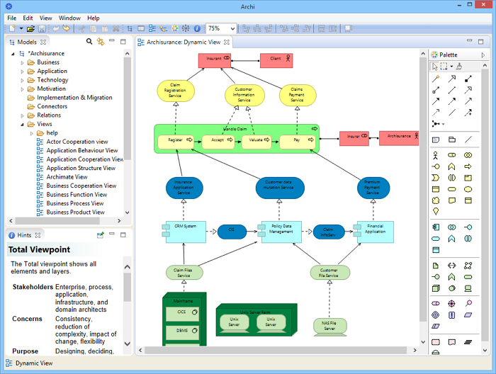
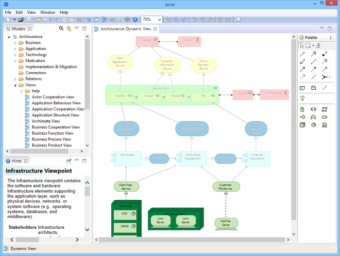

The ArchiMate Specification states that "...architects and other stakeholders can define their own views on the enterprise architecture. Viewpoints define abstractions on the set of models representing the enterprise architecture, each aimed at a particular type of stakeholder and addressing a particular set of concerns. Viewpoints can both be used to view certain aspects in isolation, and for relating two or more aspects."
In practice, a Viewpoint is a sub-set of elements and relationships. Archi allows you to specify the following Viewpoints:
When creating a new View in Archi, the default Viewpoint is set to "Total", meaning that all elements from all layers can be added to the View. Setting a Viewpoint on a View means that a sub-set of elements is available to place on the View. Some other ArchiMate authoring tools require you to specify the Viewpoint in advance when creating the View. Unfortunately, this means that you cannot change your mind should you wish to later change the Viewpoint in the View. Archi, however, implements Dynamic Viewpoints so that you can change the Viewpoint at any time and those elements that are not permitted for that Viewpoint are either "ghosted" out or hidden. Dynamic Viewpoints allow you to change your mind. You don't have to decide up-front what the Viewpoint will be. You can experiment with different Viewpoints for the same View. And if you decide to keep the Viewpoint, you can simply remove any disallowed elements from the View. You could even set up one master View and apply different Viewpoints in a "what if" scenario.
To set the Viewpoint for a View, open the View in the View editor and select the required Viewpoint from the main "View->Viewpoint" menu, or by right-clicking on the View's drawing area and selecting it from the context menu. You can also change the Viewpoint from the View's Properties window.
In the following example we start with a View that has the default "Total" Viewpoint:
A View with the "Total" Viewpoint
Notice that all elements from all the ArchiMate layers (Business, Application, and Technology) are displayed. Also, the Palette has all elements available.
If we now change the Viewpoint to "Infrastructure" then any elements that do not belong in this Viewpoint are "ghosted" out in the View. Notice, also, that only the elements permitted for the current Viewpoint are available in the Palette, whilst the others are not available:
The same View with the "Infrastructure" Viewpoint
If we look at the elements in the Model Tree we can see that non-permitted elements for the Viewpoint are greyed out:

Elements not permitted for the Viewpoint are greyed out
If we choose to, we can drag and drop any element from the Model Tree to the View but the resulting element in the View will be greyed out. This means that we can work with the Viewpoint any way we want to but we are reminded at all times of what should and shouldn't be added to the Viewpoint.
If you are unsure of the constraints for a Viewpoint select it then open the Hints Window. A full explanation is available for the Viewpoint:

A Hint for a Viewpoint
If instead of "ghosting" the non-permitted elements we wish to completely hide them we can do so in Preferences.